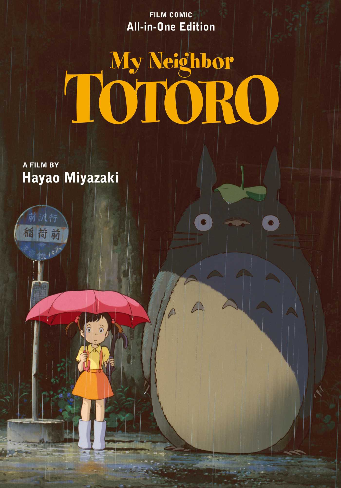
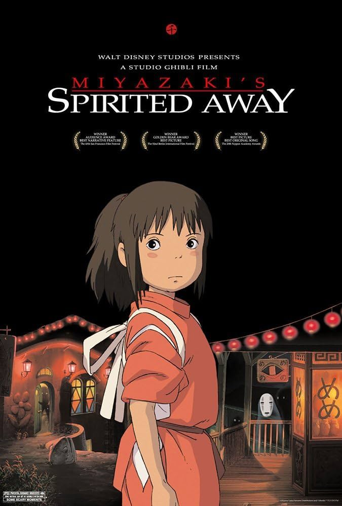
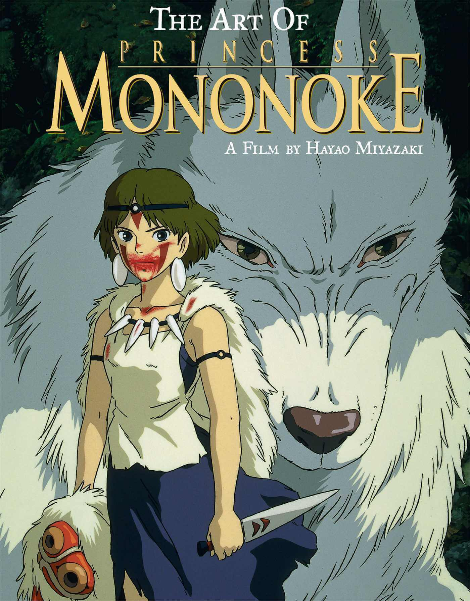
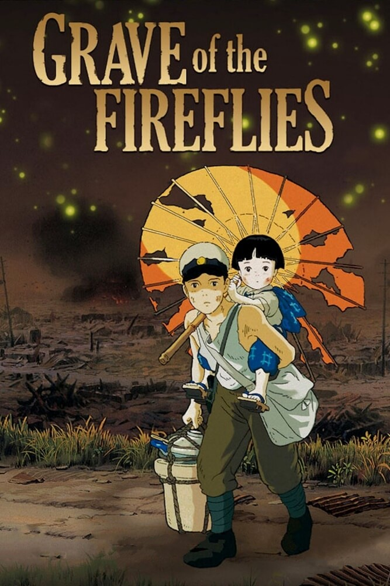
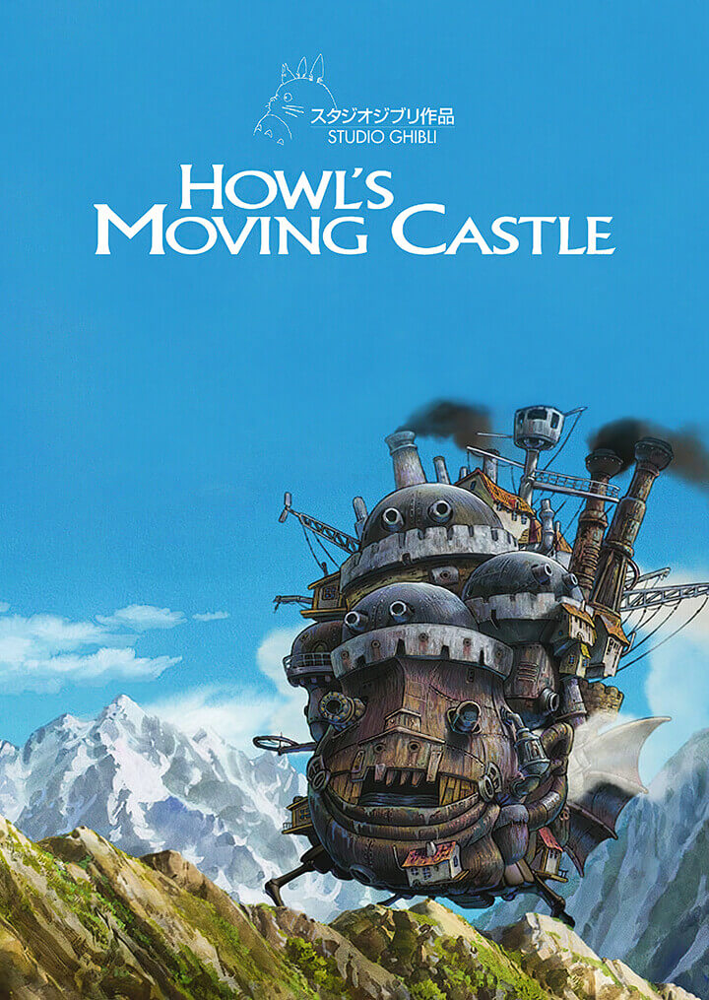

This movie goes over how childhood imagination and wonder helps us through tough times, like a mothers sickness as shown in the story.

This movie teaches us that we should never give up, even when things get tough. Chihiro is a great example of this as she faces many challenges in the spirit world.

This movie teaches us that we should respect nature and the environment. The story shows how humans and nature can coexist peacefully if we take care of our planet.

This movie teaches us about the importance of family and the impact of war on children. It shows the struggles of two siblings trying to survive during World War II.

My personal favorite movie is Howl's Moving Castle from 2004! It teaches you about the power of imagination and the importance of being true to yourself.
